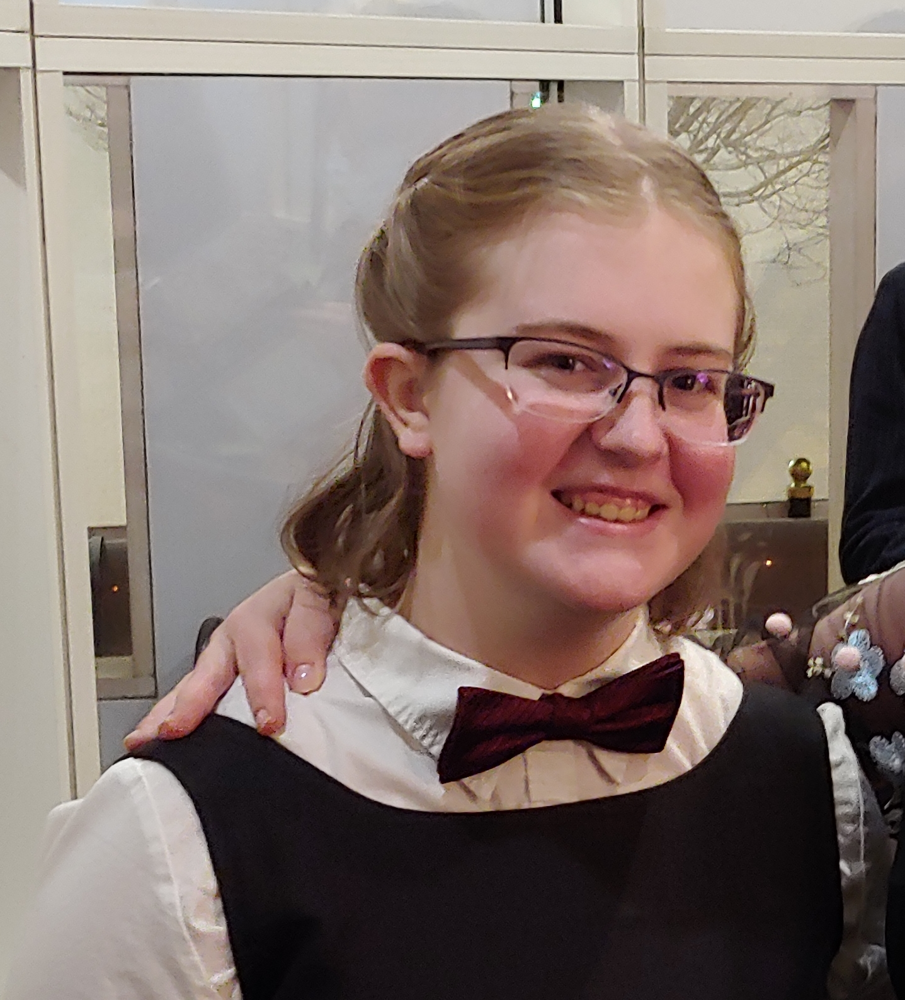

Sarah Grace: Introduction

Sarah at the Nutcracker
- Personal Background: Youngest of three kids and owner of one cat and many plants
- Professional Background: TA to Dr. Cao for Logic and Algorithms
- Academic Background: Sophomore in Computer Science, concentrating in Cybersecurity
- Programming/Software Knowledge: C++, HTML & CSS, Java, JavaScript, Python
- Courses I'm In and Why:
- ITIS 3135 Web-Based App Design and Development: To learn more about how the development process runs and to expand my coding language skill
- ITSC 3146 Intro to Operating Systems and Networking: To further my understanding of computers and how they work and work together
- ITSC 3155 Software Engineering: To further my understanding of coding and learn a new programming language
- HONR 3700 De'rive, Discovery, Expression, and Exposition: To expand my creativity and explore different ways to display research and discoveries
- Interesting Item about Me: I can and have made my own clothes